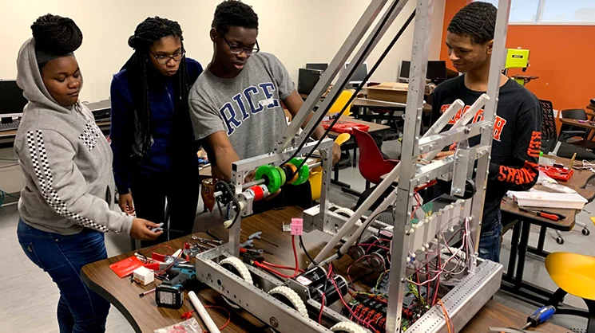

Resume
Educaton
Jones College Preparatory, Chicago, Illinois
- Unweighted GPA: 3.9
- Weighted GPA: 5.1
- College Level Courses: AP Human Geography, AP English Language, AP Biology, AP Calculus BC, AP Government, AP Physics C Mechanics, AP Computer Science Principles, AP Computer Science A, AP Statistics, AP Mandarin, Dual Enrollment African American Literature, Dual Enrollment ITMD-361, and Dual Enrollment CS-331 Data Structures.
Skills
- Studied Python, Java, HTML, and CSS
- Member of multiple clubs and organizations
- Able to speak English, Cantonese, and Mandarin
Extra-Curricular Activities
Member of Robotics Club for 4 years
- Assemble robots for competitions.
- Programming for robots.
- Collaborated on projects with team members
Member of Digital Electronics Club for 4 years
- Learned about digital electronics and how to use logic gates
- Worked on projects using digital electronics
- Collaborated on projects with team members
Member of Aerospace Club for 1 year
- Learned about rocketry and how to build rockets
- Built and launched rockets for competitions
- Collaborated on projects with team members
